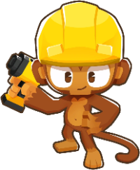
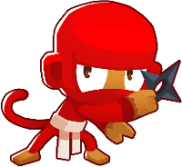

THE PEOPLE BEHIND BLOONS+Small team.
Small team.
Open invitation.
Built by klaasa. Made better through clear reports, useful ideas and focused contributions.
Find your way to help ↓
The first spot is open.
No community contributors yet. When contributions land, this is where we will recognize the people behind them.
Make your first contribution ↓PICK A STARTING POINTGood help comes
Good help comes
in different forms.
You do not need to know the whole codebase. One clear, specific improvement is enough to get started.
Report a bug.
Tell us the version, map, mode and what happened. Include the relevant redacted log lines.
Open an issue ↗Share route evidence.
Include exact tower placements, required unlocks, game version and the outcome you actually observed.
Route guide →Improve code or docs.
Start with a focused issue. Explain your change, keep original routes intact and include relevant offline checks.
Developer guide →Before sharing: remove credentials, account identifiers, save files, VM keys and personal screenshots.
BUILT ON GOOD WORK
Credit where it belongs.
Upstream projects and game assets are foundations, separate from our contributor list. Their licenses and attribution remain in place.

MEET THE COMMUNITY
Join Discord ↗Start with a conversation.
Questions, ideas and progress — all welcome.